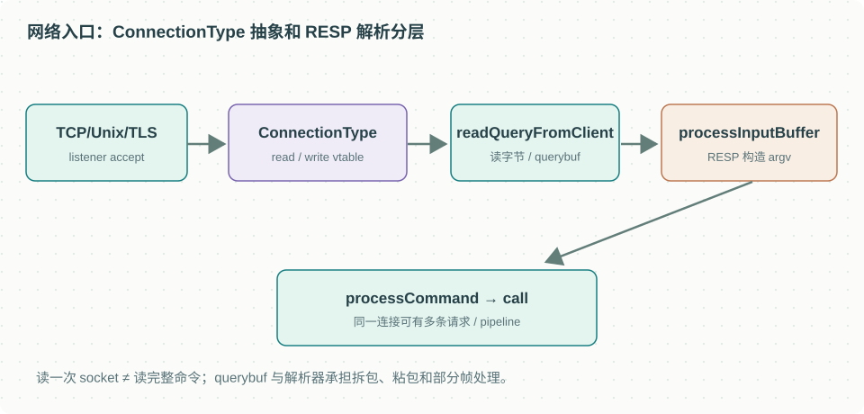
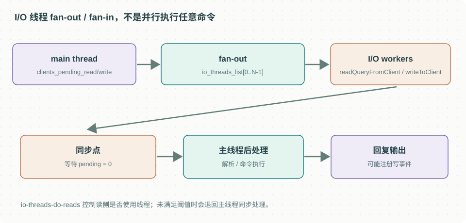
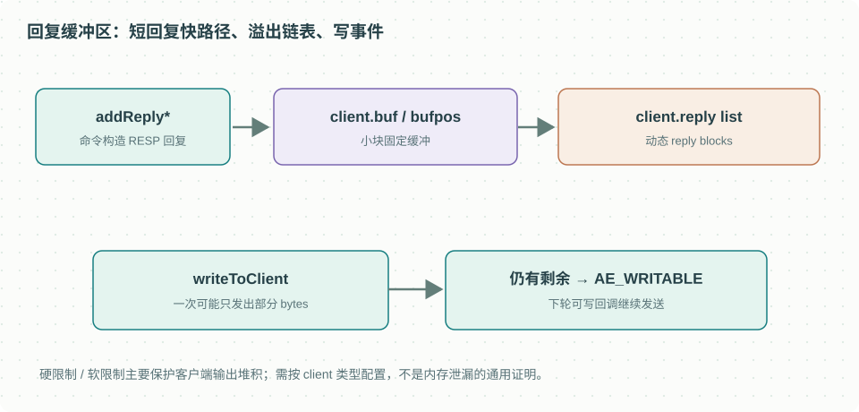

Chapter 15 / Redis 7.2.4 Source Anatomy
网络 I/O 架构：从 ConnectionType 到线程与回复缓冲
按 Redis 7.2.4 固定源码跟踪连接抽象、querybuf/RESP、I/O 线程同步点与输出背压，解释为什么网络并行不等于命令并行。
先说清楚问题：socket 字节何时变成一条命令？
网络客户端可以通过 TCP 或 TLS 发送一个 RESP 格式的请求。TCP 提供的只是连续字节流，一次读取不必等于完整的 SET 命令，一次读取也可能包含多个命令。Redis 只有在读取缓冲区内形成有效的参数边界之后，才能进行 ACL/参数检查与命令调用。如果把网络就绪和业务命令执行合并成一个方块，便无法解释半包、pipeline 或高延迟客户端。
Redis 7.2.4 的链路贯穿 anet.c、connection.h、ae.c 和 networking.c：监听 socket，抽象 connection，事件循环收到 fd readiness，读取到 querybuf，解析 RESP 得到 argv，随后进入主命令执行路径。

ConnectionType：通过 C 函数指针实现不同连接类型
Redis 使用 ConnectionType 的方法表组织 create/accept、read/write、读写事件处理和错误查询；struct connection 则包含指向方法表的 type、fd、连接状态及回调。这样网络代码能通过统一接口操作 TCP、Unix Domain Socket、TLS 类型，而不用将这些协议的条件分支复制到每个命令函数里。
/* Redis 7.2.4 src/connection.h 的字段节选 */
typedef struct ConnectionType {
int (*read)(struct connection*, void*, size_t);
int (*write)(struct connection*, const void*, size_t);
int (*set_read_handler)(struct connection*, ConnectionCallbackFunc);
int (*set_write_handler)(struct connection*, ConnectionCallbackFunc, int);
/* accept / close / TLS / pending data ... */
} ConnectionType;
struct connection {
ConnectionType *type;
ConnectionState state;
int fd;
/* read_handler / write_handler / private_data ... */
};“虚函数表”只是方便理解的类比：实现语言仍是 C。TLS 内部解密缓存与普通 socket 的可读性不完全等同，因此 Redis 还通过连接类型的 pending-data 检查参与事件循环睡眠前决策。
readQueryFromClient 与 querybuf：分清读取和解析
readQueryFromClient() 首先可以检查 postponeClientRead() 是否需要把客户端挂到待处理读列表；否则它通过 connRead() 获取网络字节并追加到 SDS 类型的 querybuf。解析层继续处理 RESP bulk/multibulk 的长度与状态，使 argc/argv 只在符合协议条件后完成。
不完整的 RESP 帧会保留在输入缓冲区等待后续数据。一个 pipeline 中多个命令可在同一次读取后依次被处理；但若遇到阻塞命令或客户端暂停状态，输入中后续命令也可能推迟。不能因为网络层读到 64 KiB 就宣称收到了“一个 64 KiB 大的命令”。
| 层次 | 主要职责 | 不提供的保证 |
|---|---|---|
connRead() | 从连接取得字节 | 一次取得完整 RESP |
querybuf | 积累尚待处理的字节 | 内部 NUL 标志命令结尾 |
processInputBuffer | 解析协议、形成参数对象 | 网络线程能任意并发执行写命令 |
processCommand/call | 检查及实际命令执行 | socket 一定已经把回复发给客户端 |
I/O 线程的职责与真正的同步边界
Redis 7.2.4 的 networking.c 中实现 initThreadedIO()、IOThreadMain()、handleClientsWithPendingWritesUsingThreads() 和 handleClientsWithPendingReadsUsingThreads()。额外线程工作在 READ 或 WRITE 模式，对分配到它的客户端列表调用 readQueryFromClient() 或 writeToClient()。主线程自身也参与一部分工作。

重要的是 fan-out/fan-in：主线程设置每个 worker 的 pending 数量，自己处理第 0 组，等待其余 worker 数量清零，然后继续执行后处理。读侧启用 io-threads-do-reads=yes 时，worker 能处理部分读/协议解析，但待执行命令会在汇合后由主命令执行路径处理。不能从“IO 有四个线程”得出“四个线程同时更新不同 Redis 数据结构”。
还存在负载阈值和特殊客户端分支：io-threads=1 就不会创建工作线程，待处理写客户端太少时也可停用额外线程；复制连接的共享输出缓冲按源码逻辑在主线程处理。线程数不是固定性能增益倍数。
回复缓冲：addReply 和 client 已收到并不是一个时间点
addReply* 只是生成待发送 RESP 内容。短回复优先放入客户端固定的 buf；较大回复或该缓冲剩余容量不足时，会进入 client.reply 组成的动态回复块列表。writeToClient() 才尝试把数据写向连接，若 socket 只接受部分数据，剩余部分需要保留并在后续 AE_WRITABLE 事件再次尝试。

这解释了为什么 SLOWLOG 不等于客户端完整响应延迟：命令可能已执行完，却因网络吞吐、TLS、慢消费者或客户端输出缓存限制，尚未送达响应。client-output-buffer-limit 可按客户端类型设置软/硬限制，软限制还考虑持续时间；排查时应结合 CLIENT LIST 的 obl/oll/omem 等字段。
瓶颈排查要分清四个时间段
| 症状 | 可能的阶段 | 先看什么 |
|---|---|---|
| 迟迟无法连接 | listener、网络、TLS/ACL 配置 | 端口绑定、socket 与日志 |
| 连接成功但请求不完整 | querybuf、RESP 解析状态 | 输入尺寸/请求编码/读线程状态 |
| PING 偶尔慢 | 执行队列、大命令、事件循环占用 | SLOWLOG / LATENCY / CPU |
| 命令已执行但客户端收得慢 | 输出缓冲、socket 背压、TLS | CLIENT LIST / 网络吞吐 |
不能把所有的超时都解释成 event loop 缓慢：客户端重试、网络链路丢包、DNS 和 TLS 握手等可能发生在 Redis 接收完整命令之前。相反，服务器内部某条高复杂度命令又确实会拖延其他客户端回调，即使网络 I/O 使用了工作线程。
对照实验：同一版本先比较配置，再比较实际负载
在隔离 Redis 7.2.4 二进制上按顺序执行以下两组实例。注意 io-threads 应作为启动配置设置；并发线程只有在满足任务量条件时才可能激活，低负载下不应预先声称吞吐提高。
# 第一组：单 I/O 线程
./src/redis-server --bind 127.0.0.1 --port 6391 --save "" --appendonly no --io-threads 1
./src/redis-cli -p 6391 CONFIG GET io-threads
./src/redis-cli -p 6391 PING
./src/redis-cli -p 6391 SHUTDOWN NOSAVE
# 第二组：可使用四个线程处理读写 I/O
./src/redis-server --bind 127.0.0.1 --port 6391 --save "" --appendonly no --io-threads 4 --io-threads-do-reads yes
./src/redis-cli -p 6391 CONFIG GET io-threads
./src/redis-cli -p 6391 CONFIG GET io-threads-do-reads
./src/redis-cli -p 6391 SET net:sample hello
./src/redis-cli -p 6391 GET net:sample
./src/redis-cli -p 6391 CLIENT LIST
./src/redis-cli -p 6391 SHUTDOWN NOSAVE两组都应支持 PING、SET/GET。若想评估吞吐差异，要统一环境、CPU 限额、连接数、负载大小、热身和重复次数，并检查 threaded I/O 是否实际被使用。只看到配置回显为 4，不能证明四条线程都处于繁忙状态，更不能推断 Redis 命令执行也变成四路并发。
把连接、事件、执行与输出连成完整因果链
最终网络模型是：ConnectionType 把不同连接统一为抽象接口；ae 判断 fd readiness；querybuf 和 RESP 解析边界形成完整 argv；服务器命令执行器维护数据结构与传播逻辑；回复缓冲和可写事件把输出逐步发回客户端。I/O worker 可以并行优化网络读写中的部分工作，但主命令路径仍会受到慢命令影响。
下一章将继续追踪 processCommand 和 call，把 ACL、MULTI/EXEC、慢日志、AOF/复制传播与网络回包放进更完整的一条请求生命周期里。
源码与参考
下列源码链接锚定 Redis 7.2.4，线程行为与命令响应仍依赖实际编译、配置和运行平台。